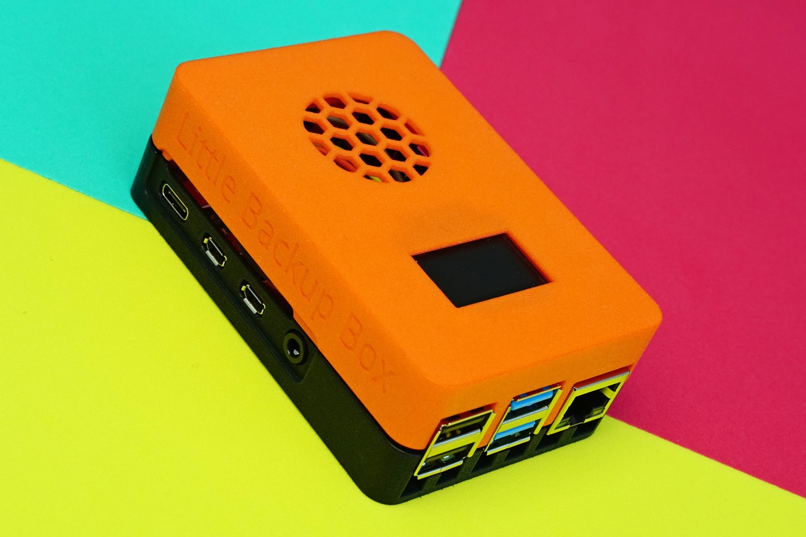

Little Backup Box
Little Backup Box is an application that transforms a Raspberry Pi (or any single-board computer running a Debian-based Linux distribution) into an inexpensive, fully-automatic, pocketable backup device. While the primary purpose of Little Backup Box is to serve as a photo backup device, it's not limited to this specific usage scenario.
Features
- Back up the contents of a storage card to an external USB storage device. Little Backup Box supports practically any USB card reader, and, by extension, any card format.
- Transfer photos and RAW files directly from a camera to an external USB storage device. If your camera is supported by gPhoto2 software, it will work with Little Backup Box.
- Use multiple cards. Little Backup Box assigns a unique ID to each card and create a separate folder for each card on the backup storage device.
- Perform card backup fully automatically with no user interaction.
- Start specific backup operations manually using Little Backup Box's web UI.
- Automatically generate a minimalist responsive gallery from the backed up RAW files.
- Stream the backed up photos to any DLNA-compatible client.
- Access the backed up content from other machines on the network.
- Push backed up contents to a cloud storage service.
Little Backup Book
The Little Backup Book book provides step-by-step instructions on building, configuring, using, and troubleshooting a Raspberry Pi-based photo backup device running Little Backup Box. Get your copy on Google Play Store or Gumroad.

By buying the book, you are supporting the Linux Backup Box project.
Installing and using Little Backup Box
Basic instructions on installing and using Little Backup Box are available in the Little Backup Box GitHub repository.
© 2020 Dmitri Popov